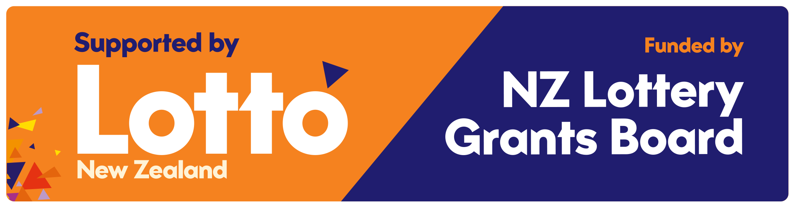

A Christchurch-based charity bringing people together through events, workshops, and initiatives that build a thriving, connected community.
Our work is made possible through the support of community funders, volunteers, and partners who help us deliver programmes in Christchurch.

We are grateful for the support of the New Zealand Lottery Grants Board (Te Puna Tahua), which enables us to deliver community programmes that strengthen wellbeing, connection, and participation in Christchurch.
We are grateful for the support of Rātā Foundation, which helps us deliver local community initiatives and engagement programmes in Christchurch.
Our programmes are made possible through community support. If you would like to contribute, please get in touch to learn how you can support our work.
Email: prospirecommunitytrust@gmail.com
We sincerely thank all our volunteers who give their time, skills, and energy to support our community programmes and events.